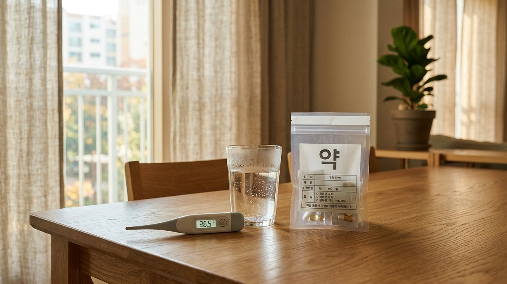
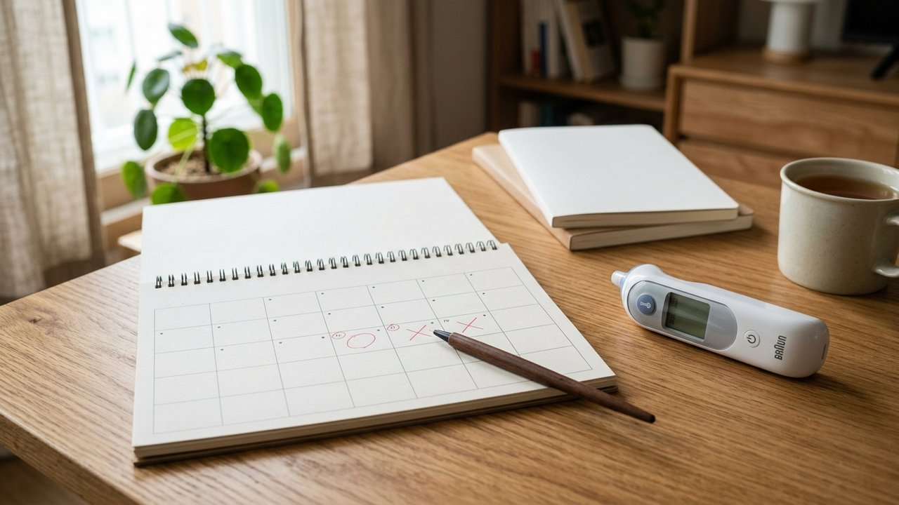

독감 예방접종 날짜를 손꼽아 기다렸는데,
당일 아침 목이 살짝 칼칼하거나 맑은 콧물이 비쳐 당황하신 적 있으신가요?
'감기 기운이 조금이라도 있으면 주사를 맞으면 안 된다'는 말과
'가벼운 감기는 맞아도 괜찮다'는 조언 사이에서 고민이 깊어지셨을 겁니다.
열이 없거나 가벼운 초기 감기 증상이라면 일반적으로 접종을 미룰 필요가 없습니다.
하지만 오한이나 심한 몸살 등 전신 증상이 있다면 의료진 예진을 통해 신중히 결정해야 합니다.
오늘 에디터 혀니가 최신 공인 보건 가이드라인을 토대로
접종 가능 여부를 가르는 질환 중증도 기준과 감기약 복용 수칙을 명쾌하게 정리해 드릴게요.
예방접종 가능 여부를 결정짓는 가장 핵심적인 기준은
단순한 콧물보다 ‘질환의 중증도와 전신 상태’입니다.
질병관리청과 미국 CDC 지침에 따르면 발열 유무와 관계없이
가벼운 상기도 감염(콧물, 코막힘, 가벼운 목 따가움)은 접종 금기나 주의사항이 아닙니다.
국내에서 일반적으로 접종하는 주사용 인플루엔자 백신은 불활성화 백신이므로,
가벼운 감기가 있다고 해서 백신 바이러스가 체내에서 증식하지는 않거든요.

하지만 발열과 함께 오한, 심한 몸살, 전신 쇠약 등 중등도 이상의 증상이 있다면
이날은 체온 숫자만으로 자가 판단하기보다 의료진의 예진을 받아 일정을 조정하는 것이 안전합니다.
전신 상태가 저하된 상태에서 접종하면 백신 접종 후 나타나는 정상 면역 반응과
기존 감기 증상이 뒤섞여 원인 구분이 어려워지고, 환자가 느끼는 신체 증상 부담도 커질 수 있기 때문입니다.
이미 며칠 전부터 감기약을 처방받아 드시고 계셨다면
내가 먹고 있는 약 성분을 차분히 확인해 보아야 합니다.
일반적인 종합감기약의 항히스타민제, 진해거담제,
그리고 세균 감염 치료를 위한 항생제 복용 자체는 접종 금기사항이 아닙니다.
다만 항생제가 필요할 정도의 감염을 앓고 있다면 약 자체보다 감염의 중증도를 따져야 하며,
주사를 맞겠다고 처방된 항생제를 임의로 중단해서는 안 됩니다.
또한 인플루엔자 항바이러스제는 백신 종류(생백신 등)에 따라 영향을 줄 수 있으므로
처방 내역을 병원 예진 시 의사 선생님께 반드시 말씀해 주셔야 합니다.
현재 앓고 있는 감기 증상 완화를 위해 처방받은 해열진통제는 복용하셔도 괜찮습니다.
다만 백신을 맞은 뒤 혹시 열이 날까 봐 ‘예방 목적으로 해열제’를 미리 찾아 드실 필요는 전혀 없다는 뜻입니다.
소아 백신 연구 등에서 예방적 해열제 투여 시 일부 항체 반응이 낮게 나타난 바 있지만,
성인 독감 백신에 그대로 적용할 수는 없으므로 접종 후 실제로 열이나 통증이 생겼을 때 드시는 것으로 충분합니다.
병원에 도착하시면 가장 먼저 작성하는 예진표에
최근 며칠간 앓았던 감기 증상과 복용 중인 약물을 솔직하게 적어주세요.
과거 인플루엔자 백신 접종 후 아나필락시스 등 중증 알레르기를 겪었거나
백신 성분에 과민 반응이 있는 경우 반드시 예진 의사에게 알려야 합니다.
주사를 맞은 직후에는 곧바로 귀가하지 마시고
의료기관 접수대 근처에서 20~30분간 반드시 머무르며 급성 반응을 관찰해야 합니다.
드물게 발생할 수 있는 아나필락시스 반응은 대개 접종 후 20~30분 이내에 나타나므로,
의료진의 즉각적인 응급 처치가 가능한 원내에서 안정을 취하는 것이 필수적입니다.
접종 당일에는 무리한 운동이나 장시간의 사우나, 음주는 피하고
집에서 따뜻한 보리차나 미온수를 마시며 온전한 휴식을 선물해 주세요.
가벼운 콧물이나 단순 감기 기운이 있더라도
발열이나 심한 전신 증상이 없다면 안심하고 예정대로 접종을 진행하셔도 좋습니다.
다만 스스로 짐작하기 어려운 심한 몸살이나 발열이 동반된다면 무리하지 마시고,
예진 시 의사 선생님께 증상을 솔직히 말씀드려 안전하게 일정을 상의해 보세요.
여러분은 올가을 독감 예방접종을 이미 완료하셨나요,
아니면 컨디션을 살피며 날짜를 조율 중이신가요? 여러분의 경험을 댓글로 편하게 들려주세요 😊
#독감예방접종 #독감예방접종감기기운 #독감주사감기약 #독감발열증상기준 #예방접종당일주의사항 #독감항생제복용 #에디터혀니 #꿀단지